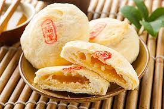

|
|
 | |
| 桂花糕 | 鳳梨酥 | 太陽餅 | 心得 |

紅豆餅是一種中國傳統的點心，背後有著一些富有文化意義的典故。
紅豆在中國文化中被視為吉祥的象徵，因其紅色象徵著繁榮和好運。製作成紅豆餅，尤其是圓形的紅豆餅，更加突顯了這個象徵意義，使其成為慶祝節慶和吉祥活動的常見點心。
在一些傳統的愛情故事中，紅豆也常常與甜蜜的愛情相關聯。紅豆餅由於內裡包含著香甜的紅豆餡，有時被視為象徵著甜蜜的愛情，成為婚禮和情人節等場合的浪漫禮物。
在一些古典文學作品中，紅豆餅也被提及。例如，明代文學家辛棄疾的《青玉案·元夕》中有“紅豆生南國，春來發幾枝”這樣的詩句，描繪了紅豆在春天生長的畫面。